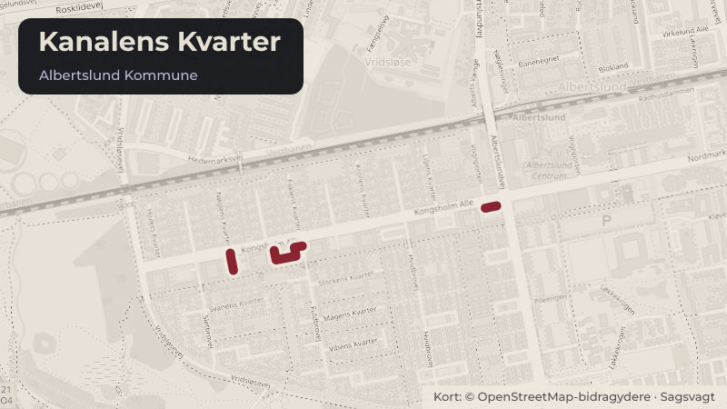

Besluttet 20. august, Kultur- og Fritidsudvalget, Albertslund
KFU - Beslutning om tilskud til lyskunst i Kanalens Kvarter
Skoler og børnUnge og uddannelseKultur og fritid

Kort fortalt
- Forslaget
- Ansøgningen tildeles støtte på 30.000 kr. til workshop og produktion af
- Hvem
- Kultur- og Fritidsudvalget, Albertslund Kommune
- Hvornår
- Torsdag 20. august 2026
- Status
- Besluttet. X Supplerende sagsfremstilling Godkendte indstillingen.Beslutningen er forkortet her. Læs hele beslutningen
Er noget forkert her? Skriv til os
Læs hele sagen Kommunens egen tekst
Indstilling
Konst. direktør for By, Kultur, Miljø & Beskæftigelse indstiller,
1. at ansøgningen tildeles støtte på 30.000 kr. til workshop og produktion af
lyskunstværker.
Sagsfremstilling
Kunstner Jakob Fälling har i samarbejde med Albertslund Boligsociale Center ansøgt om
30.000 kr. til projektet Natdyr. Projektet retter sig primært mod børn og unge i Kanalens Kvarter
samt deres familier. Gennem en kreativ workshop skal deltagerne tegne dyr, fantasidyr og
natdyr med afsæt i temaer som mørke, årstider og natur. Workshoppen forventes at samle
omkring 20 deltagere, heraf 10-12 børn.
Efter workshoppen omsætter kunstneren 7-10 af børnenes tegninger til større lyskunstværker,
som udstilles som en del af lysfestivalen "Lys i Mørket" i Kanalgaden den 15. januar 2027.
Værkerne udføres som oplyste installationer, hvor børnenes originale tegninger danner
grundlag for de færdige kunstværker. Børnenes navne og alder vil fremgå af værkerne, så de
kan genkende og formidle deres bidrag til familie og venner.
Projektet har til formål at styrke børns deltagelse i kunst- og kulturlivet ved at lade dem indgå
som medskabere af et offentligt kulturarrangement. Samtidig skal projektet bidrage til
fællesskab, lokal identitet og kulturelle oplevelser i Kanalens Kvarter.
Der søges om 30.000 kr. til materialer, afvikling af workshop, kunstnerhonorar samt produktion
af lysværkerne. Udgifter til montering og præsentation af værkerne ved lysfestivalen forventes
finansieret gennem ekstern fundraising eller egenfinansiering.
Forvaltningens vurdering af projektet
Forvaltningen vurderer, at projektet understøtter denne målsætning fra Kultur- og
fritidspolitikken "Borgernes møde med kunsten og kulturen skal medvirke til at skabe
fællesskaber, dannelse og forståelse for ens medborgere".
Projektet kombinerer kunstnerisk kvalitet med aktiv borgerinddragelse og giver børn og unge
mulighed for selv at bidrage til et offentligt kulturarrangement. Samtidig skaber projektet en
synlig sammenhæng mellem den kreative proces og det færdige kunstværk, hvilket kan styrke
deltagernes ejerskab og tilknytning til lokalområdet.
Det vurderes desuden positivt, at projektet indgår som en del af den større lysfestival "Lys i
Mørket" og dermed forventes at nå en bred målgruppe ud over de direkte deltagere i
workshoppen.
Ansøgningen er modtaget den 8. juni 2026.
Kommunens vision og politikker
Projektet understøtter Albertslund Kommunes ambition om at skabe levende lokalsamfund
med stærke fællesskaber og adgang til kunst og kultur for alle borgere. Gennem aktiv
deltagelse i kunstneriske processer bidrager projektet til at styrke børn og unges møde med
kunst og kultur samt til at skabe attraktive kulturtilbud i byens boligområder.
Økonomi
Der ansøges om 30.000 kr. til gennemførelse af projektet. Der er 286.500 kr. til i de
disponible midler.
Poster
Materialeforbrug pr.
tegning (7x 750 kr.
Indtægter
Udgifter
Materialeforbrug
workshop
Løn workshop
(forberedelse,
udvikling, afvikling)
Forplejning på
workshop
Omdannelse af
tegninger til lyskunst
kr.
Uforudsete udgifter
Ansøgt beløb
Ialt
kr.
Medfinansiering: Montering og afvikling (dvs. visning af værkerne på lysfesten)
finansieres af andre fonde eller via egenfinansiering (frivillige timer fra kunstner og/eller
beboere).
Lovgrundlag
Intet at bemærke.
Borgerperspektiv
Borgerinddragelse er et centralt element i projektet. Børn og unge fra Kanalens Kvarter
deltager som medskabere af de kunstværker, der efterfølgende udstilles ved lysfestivalen "Lys
i Mørket". Projektet involverer samtidig familier og lokale fællesskaber gennem
workshopaktiviteter og den offentlige præsentation af værkerne, hvilket understøtter lokalt
engagement og ejerskab til kulturaktiviteterne.
Beslutning
X
Supplerende
sagsfremstilling
Godkendte indstillingen.
Akhlaq Ahmad (A) deltog ikke under punktet.
Kilde: Albertslund Kommune, Kultur- og Fritidsudvalget, referat fra mødet torsdag 20. august 2026, punkt 8. Læs den originale sag hos kommunen.
Steder i sagen: Kanalens Kvarter